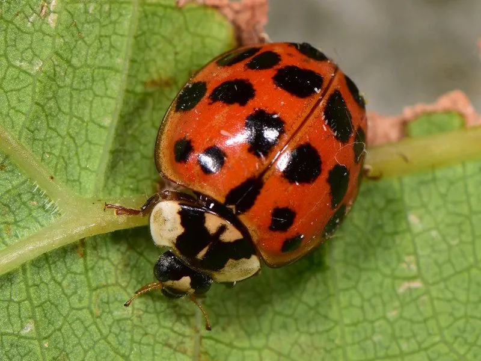

昆虫 · 动物界
异色瓢虫 Harmonia axyridis

色型变化极多的亚洲捕食性瓢虫，捕食蚜虫，曾被大量引入欧美用于生物防治，却成为著名的入侵物种。
- 分类
- 门节肢动物门纲昆虫纲目鞘翅目科瓢虫科属异色瓢虫属
- 栖息环境
- 农田、果园、林地与城市绿地，成虫在缝隙中越冬
- 地理分布
- 原产东亚，现被引入并扩散至北美、欧洲等地
- 保护级别
- 暂无评估；在欧美被列为入侵物种
物种志
异色瓢虫成虫体长约 5–8 mm，鞘翅底色和斑点变化极大：有的黄底带黑斑，有的黑底带红斑，斑纹数量从 0 到 20 多个不等，鉴定的可靠特征是鞘翅末端有一个横向隆起的脊。
它是捕食性瓢虫，成虫和幼虫都取食蚜虫、蚧虫和叶螨，食量大，繁殖快。异色瓢虫原产东亚，20 世纪被大量引入北美和欧洲用于生物防治，结果在野外建立种群并迅速扩散，与本地瓢虫竞争食物、捕食本地物种，被列为全球知名的入侵物种。它在中国的果园和农田中很常见，是重要的蚜虫天敌；但成虫有时会进入室内越冬，被触碰时可能分泌黄色液体。利用时需注意其对非靶标昆虫和本地瓢虫的影响。
形态与习性
- 食性成虫和幼虫捕食蚜虫、蚧虫和叶螨
- 体长约 5–8 mm
- 色型黄底黑斑、黑底红斑等多种色型
- 识别鞘翅末端有一个横向隆起的脊
- 入侵性引入欧美后扩散，与本地瓢虫竞争
- 生态作用蚜虫的重要天敌，可用于生物防治
趣味知识
- 异色瓢虫的色型多得惊人，黄底黑斑和黑底红斑可能是同一种。
- 它被引入欧美做生物防治后，反而成了当地有名的入侵物种。
- 异色瓢虫受惊时分泌的黄色液体有异味，能吓退天敌。